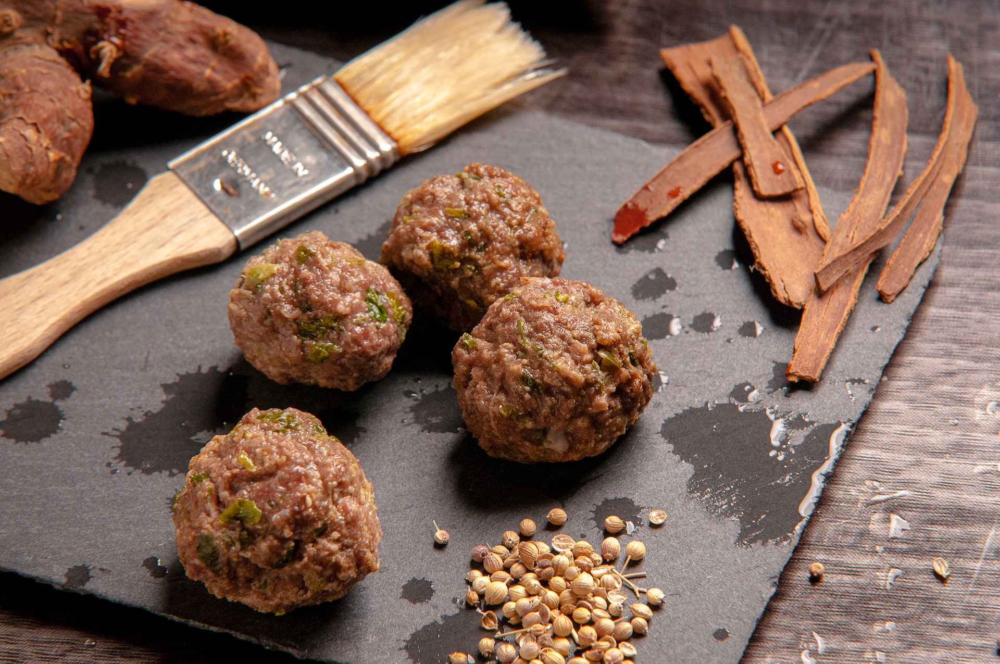

Meatballs Recipe

Description
This is an Italian-style pasta sauce with homemade meatballs that's
cooked slowly over low heat for an intense tomato flavor. It's easy to
make the spaghetti sauce ahead of time; gently reheat and add meatballs
30 minutes before you're ready to serve with your favorite pasta.
Ingredients
- 1 pound lean ground beef
- 1 cup fresh bread crumbs
- 1 tablespoon dried parsley
- 1 tablespoon grated Parmesan cheese
- ¼ teaspoon ground black pepper
- ⅛ teaspoon garlic powder
- 1 egg, beaten
Steps
- Gather all ingredients
-
In a large bowl, combine ground beef, bread crumbs, parsley, Parmesan,
1/4 teaspoon black pepper, garlic powder and beaten egg. Mix well and
form into 12 balls. Store, covered, in refrigerator until needed.
-
In a large saucepan over medium heat, saute onion and garlic in olive oil until onion is translucent.
-
Stir in tomatoes, salt, sugar and bay leaf. Cover, reduce heat to low, and simmer 90 minutes.
-
Stir in tomatoes, salt, sugar and bay leaf. Cover, reduce heat to low, and simmer 90 minutes.